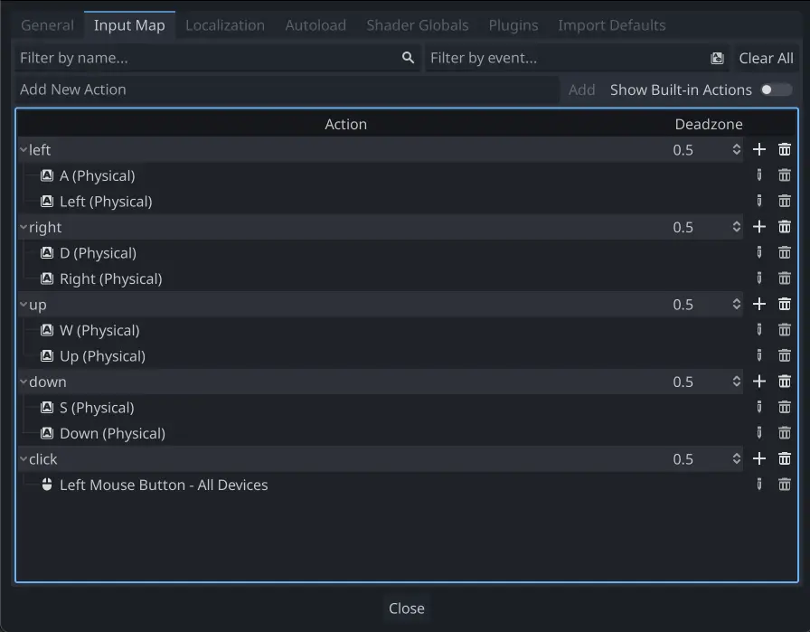

2D movement overview
Introduction
Every beginner has been there: "How do I move my character?" Depending on the style of game you're making, you may have special requirements, but in general the movement in most 2D games is based on a small number of designs.
We'll use CharacterBody2D for these examples, but the principles will apply to other node types (Area2D, RigidBody2D) as well.
Setup
Each example below uses the same scene setup. Start with a CharacterBody2D with two
children: Sprite2D and CollisionShape2D. You can use the Godot icon (icon.svg)
for the Sprite2D's texture or use any other 2D image you have.
Open Project -> Project Settings and select the "Input Map" tab. Add the following
input actions (see InputEvent for details):

8-way movement
In this scenario, you want the user to press the four directional keys (up/left/down/right or W/A/S/D) and move in the selected direction. The name "8-way movement" comes from the fact that the player can move diagonally by pressing two keys at the same time.
Attach a script to the character body and add the following code:
extends CharacterBody2D
@export var speed = 400
func get_input():
var input_direction = Input.get_vector("left", "right", "up", "down")
velocity = input_direction * speed
func _physics_process(delta):
get_input()
move_and_slide()
using Godot;
public partial class Movement : CharacterBody2D
{
[Export]
public int Speed { get; set; } = 400;
public void GetInput()
{
Vector2 inputDirection = Input.GetVector("left", "right", "up", "down");
Velocity = inputDirection * Speed;
}
public override void _PhysicsProcess(double delta)
{
GetInput();
MoveAndSlide();
}
}
In the get_input() function, we use Input get_vector() to check for the
four key events and sum return a direction vector.
We can then set our velocity by multiplying this direction vector, which has a
length of 1, by our desired speed.
Tip
If you've never used vector math before, or need a refresher, you can see an explanation of vector usage in Godot at Vector math.
Note
If the code above does nothing when you press the keys, double-check that you've set up input actions correctly as described in the Setup part of this tutorial.
Rotation + movement
This type of movement is sometimes called "Asteroids-style" because it resembles how that classic arcade game worked. Pressing left/right rotates the character, while up/down moves it forward or backward in whatever direction it's facing.
extends CharacterBody2D
@export var speed = 400
@export var rotation_speed = 1.5
var rotation_direction = 0
func get_input():
rotation_direction = Input.get_axis("left", "right")
velocity = transform.x * Input.get_axis("down", "up") * speed
func _physics_process(delta):
get_input()
rotation += rotation_direction * rotation_speed * delta
move_and_slide()
using Godot;
public partial class Movement : CharacterBody2D
{
[Export]
public int Speed { get; set; } = 400;
[Export]
public float RotationSpeed { get; set; } = 1.5f;
private float _rotationDirection;
public void GetInput()
{
_rotationDirection = Input.GetAxis("left", "right");
Velocity = Transform.X * Input.GetAxis("down", "up") * Speed;
}
public override void _PhysicsProcess(double delta)
{
GetInput();
Rotation += _rotationDirection * RotationSpeed * (float)delta;
MoveAndSlide();
}
}
Here we've added two variables to track our rotation direction and speed.
The rotation is applied directly to the body's rotation property.
To set the velocity, we use the body's transform.x which is a vector pointing
in the body's "forward" direction, and multiply that by the speed.
Rotation + movement (mouse)
This style of movement is a variation of the previous one. This time, the direction is set by the mouse position instead of the keyboard. The character will always "look at" the mouse pointer. The forward/back inputs remain the same, however.
extends CharacterBody2D
@export var speed = 400
func get_input():
look_at(get_global_mouse_position())
velocity = transform.x * Input.get_axis("down", "up") * speed
func _physics_process(delta):
get_input()
move_and_slide()
using Godot;
public partial class Movement : CharacterBody2D
{
[Export]
public int Speed { get; set; } = 400;
public void GetInput()
{
LookAt(GetGlobalMousePosition());
Velocity = Transform.X * Input.GetAxis("down", "up") * Speed;
}
public override void _PhysicsProcess(double delta)
{
GetInput();
MoveAndSlide();
}
}
Here we're using the Node2D look_at() method to
point the player towards the mouse's position. Without this function, you
could get the same effect by setting the angle like this:
rotation = get_global_mouse_position().angle_to_point(position)
var rotation = GetGlobalMousePosition().AngleToPoint(Position);
Click-and-move
This last example uses only the mouse to control the character. Clicking on the screen will cause the player to move to the target location.
extends CharacterBody2D
@export var speed = 400
var target = position
func _input(event):
# Use is_action_pressed to only accept single taps as input instead of mouse drags.
if event.is_action_pressed(&"click"):
target = get_global_mouse_position()
func _physics_process(delta):
velocity = position.direction_to(target) * speed
# look_at(target)
if position.distance_to(target) > 10:
move_and_slide()
using Godot;
public partial class Movement : CharacterBody2D
{
[Export]
public int Speed { get; set; } = 400;
private Vector2 _target;
public override void _Input(InputEvent @event)
{
// Use IsActionPressed to only accept single taps as input instead of mouse drags.
if (@event.IsActionPressed("click"))
{
_target = GetGlobalMousePosition();
}
}
public override void _PhysicsProcess(double delta)
{
Velocity = Position.DirectionTo(_target) * Speed;
// LookAt(_target);
if (Position.DistanceTo(_target) > 10)
{
MoveAndSlide();
}
}
}
Note the distance_to() check we make prior to movement. Without this test,
the body would "jitter" upon reaching the target position, as it moves
slightly past the position and tries to move back, only to move too far and
repeat.
Uncommenting the look_at() line will also turn the body to point in its
direction of motion if you prefer.
Tip
This technique can also be used as the basis of a "following" character.
The target position can be that of any object you want to move to.
Summary
You may find these code samples useful as starting points for your own projects. Feel free to use them and experiment with them to see what you can make.
You can download this sample project here: 2d_movement_starter.zip